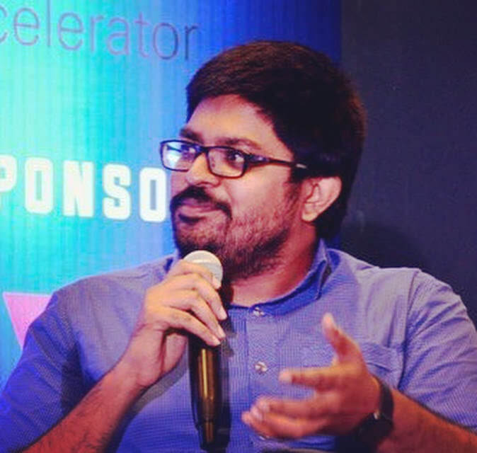

Vidyasagar
Machupalli FBCS
Software Development Operations Manager & Executive IT Architect at IBM FBCS
BCS Fellow · Microsoft MVP Alumni · DZone Core · Architecting AI, Cloud, Security & Quantum solutions
About
I design and lead complex cloud & AI workloads for IBM's top-tier financial and healthcare clients. As a Software Development Operations Manager and Executive IT Architect, I bridge enterprise strategy with technical execution — managing globally distributed teams, architecting mission-critical systems, and driving AIOps innovation.
My toolkit spans SAP ASE, VSI on VPC, z Systems, VMware, ROKS/IKS, and modern DevSecOps pipelines. Over 18 years, I've moved from writing code at Mahindra Satyam to shaping IBM Cloud's multi-billion dollar workload strategy — picking up a Microsoft MVP, BCS Fellowship, and IBM OTAA along the way.
I'm also a DZone Core contributor (101 articles, 609.3K+ views), an OpenGroup Distinguished Architect, and a member of the Association of Enterprise Architects. When I'm not architecting cloud solutions, I speak at international conferences or explore quantum computing.
Experience
18+ years of leadership and innovation across enterprise technology.
Awards & Recognition
Writing
Contact
Interested in collaboration, speaking, or consulting? Let's connect.